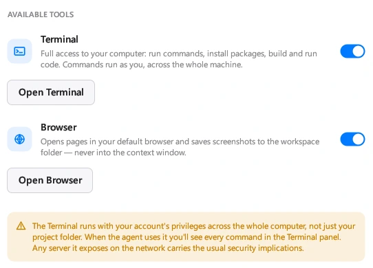

01 / Project context
Start with your files.
Create a project, choose a working folder, and describe the task. The agent can read and edit files so the conversation stays connected to your code.
02 / Software development
Unmild Agent is an AI coding agent for Windows. Work with your files, choose a model, and turn a task into changes you can review.

The workflow
01 / Project context
Create a project, choose a working folder, and describe the task. The agent can read and edit files so the conversation stays connected to your code.
02 / Model choice
Configure a supported provider with your own API key, then select a model and effort level. Your provider bills model usage separately from the app.
03 / Tools
Use terminal and browser tools for tasks that need them. Follow the work in the app and review the resulting changes in your project.
04 / Control
Choose a permission mode to control when the agent asks before acting. Review access before running a task: terminal commands can run with your account’s privileges.

Yes. Bring an API key for a supported provider. You choose the model, and your provider charges for model usage separately from the app.
Agent is a paid app on Microsoft Store. Check the listing for current pricing, availability, and system requirements.
They are separate UNMILD products. Designer focuses on electronic hardware; Agent focuses on software development tasks.
Visit the product documentation for setup information and supported providers, or contact support.